A designXflow nasceu da paixão pelo design e da vontade de transformar ideias em algo visual, criativo e impactante.
Somos uma equipa dedicada a criar designs personalizados, pensados à medida de cada cliente. Cada projeto nasce de uma ideia ou visão única, e o nosso trabalho é transformá-la em realidade.
Na designXflow, o processo é simples e colaborativo: partilhas a tua ideia e nós transformamo-la num design atual, criativo e pensado ao detalhe, sempre adaptado a cada projeto.
Desenvolvemos projetos de design gráfico, identidade visual, logótipos e conteúdos para redes sociais, ajudando marcas e pessoas a comunicar melhor através do design.
Este site reúne também o nosso portfólio, onde podes ver alguns dos projetos que já desenvolvemos. Os projetos apresentados estão em constante atualização, com novos trabalhos a serem adicionados regularmente. Todos os designs contêm marca de água, garantindo a proteção dos trabalhos e evitando qualquer uso indevido.
Mais do que criar visuais, queremos criar uma boa experiência, onde há comunicação, confiança e flow entre quem idealiza e quem cria.
Para orçamentos, informações mais específicas ou pedidos personalizados, disponibilizamos o nosso email e Instagram na área de contactos. Estamos sempre disponíveis para falar contigo e dar início ao teu projeto.
designXflow - Ideias tuas. Design nosso.


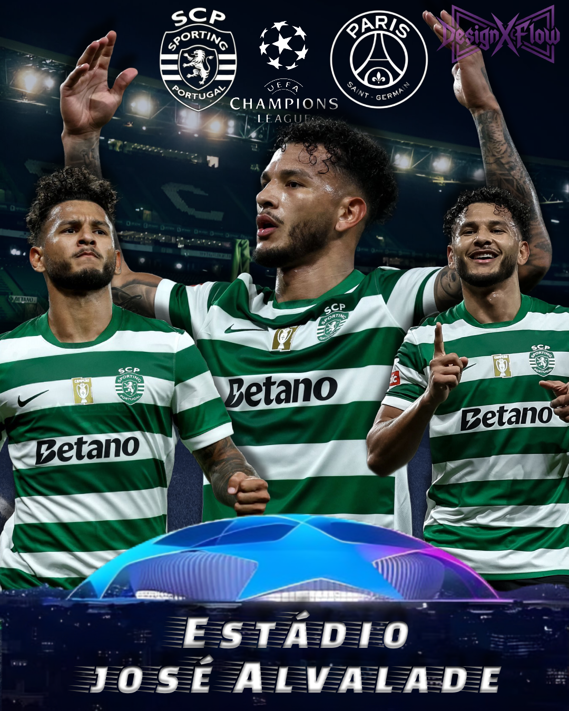
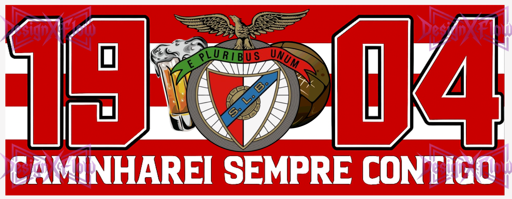

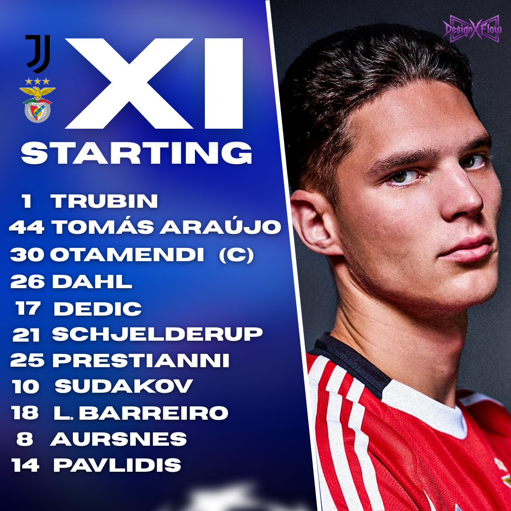
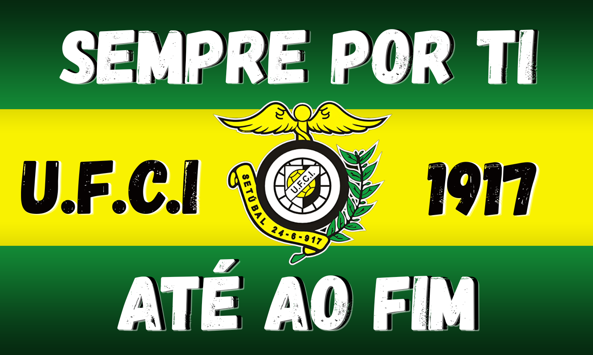
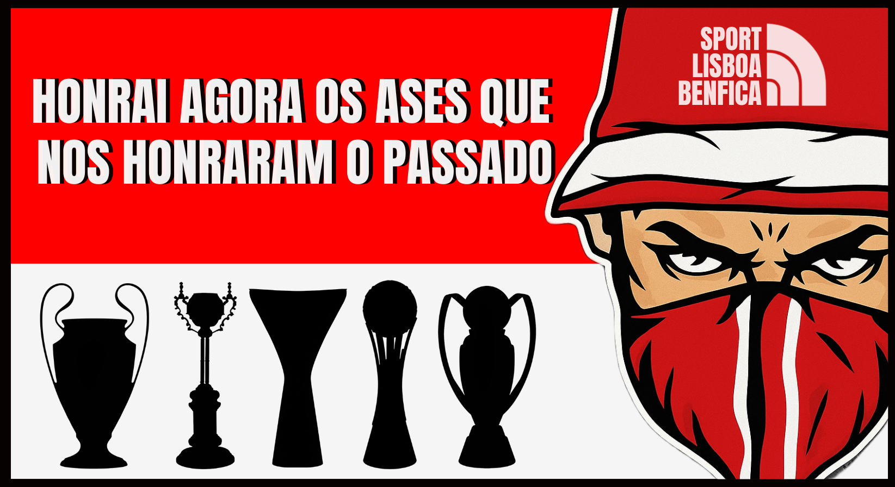
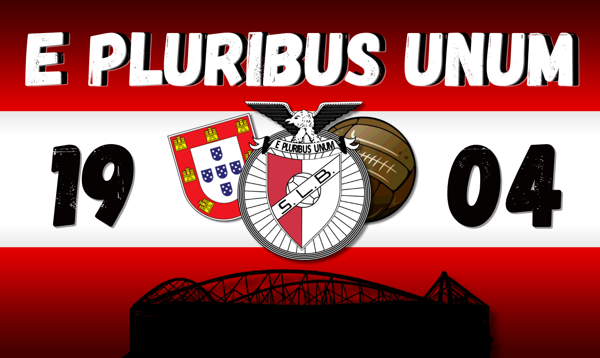
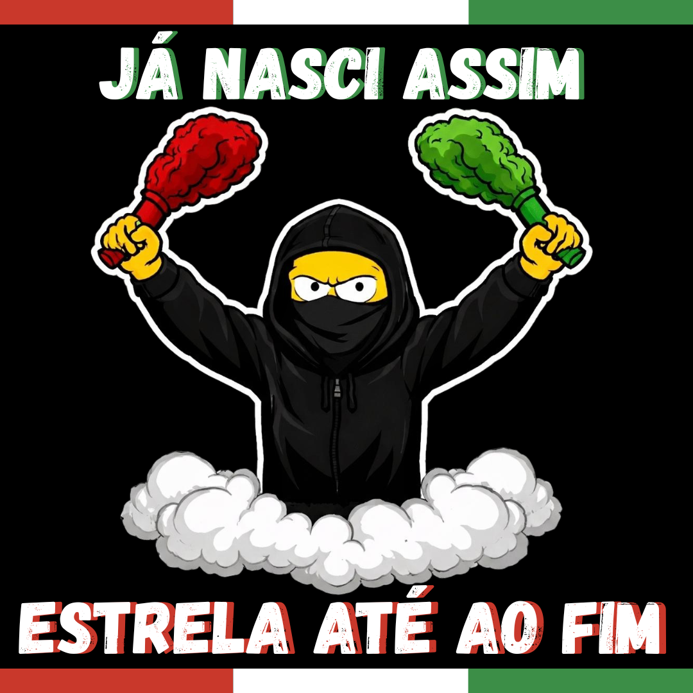
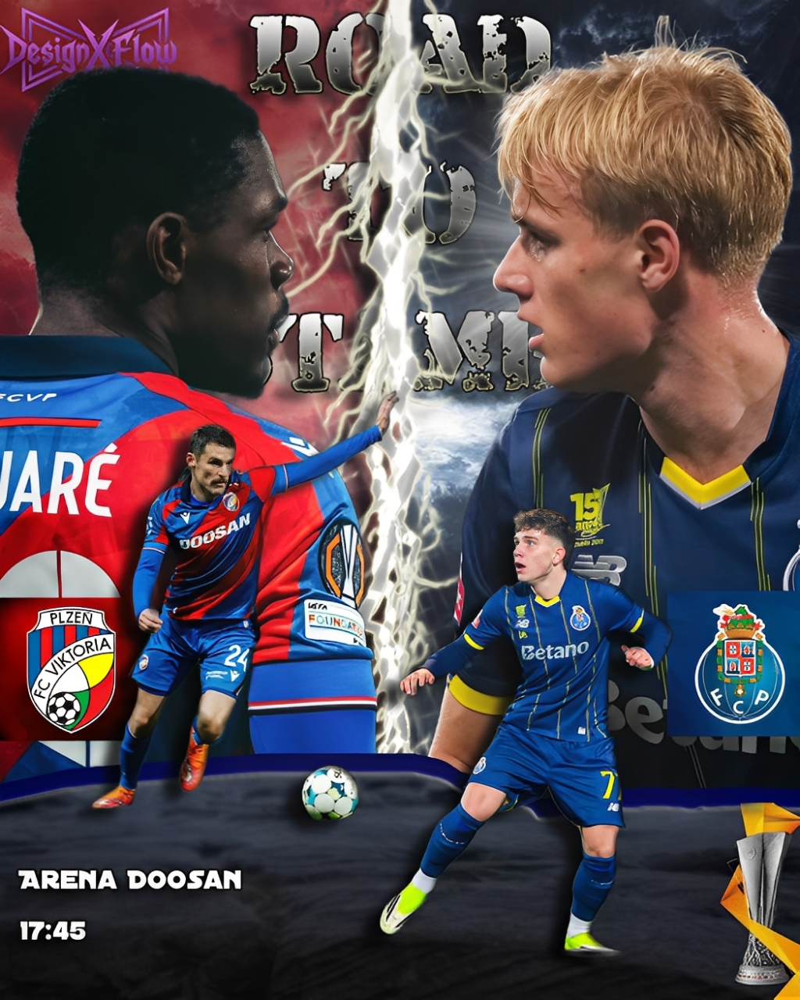
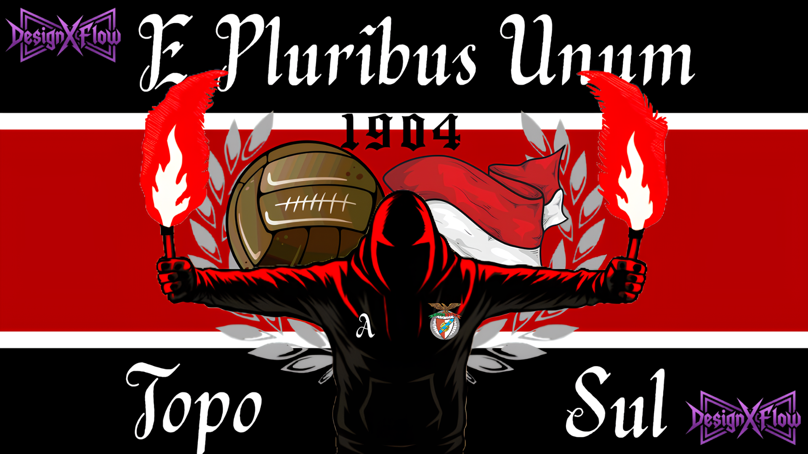
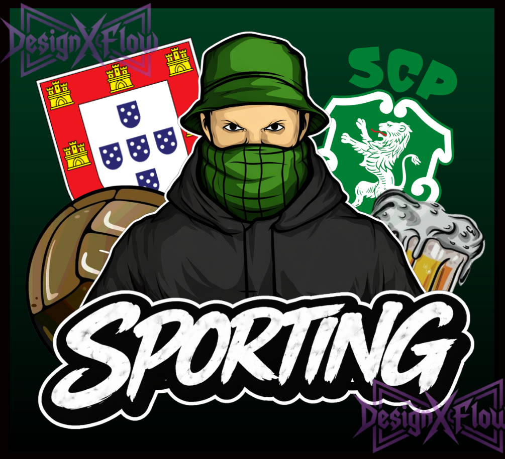
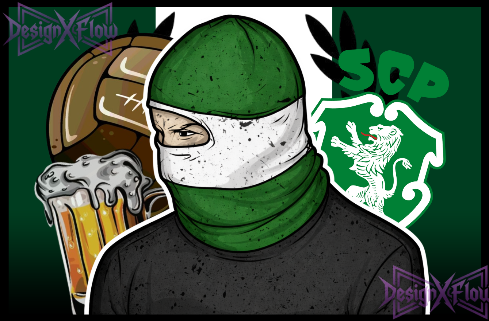